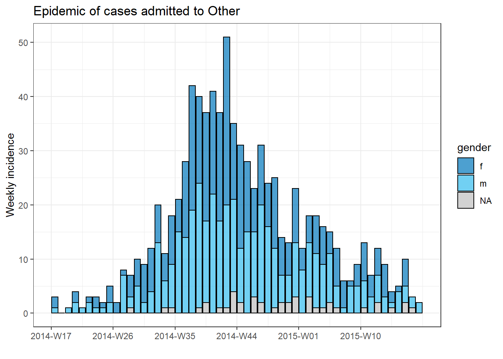

16 Iteration and loops
PAGE IS CURRENTLY UNDER CONSTRUCTION
This page will introduce two approaches to iterative operations - using for loops and using the package purrr. Iterative operations help you perform repetitive tasks, reduce the chances of error, reduce code length, and maximize efficiency.
purrr facilitates “mapping” a function across many inputs (columns, datasets, etc.)
for loops also iterate code across a series of inputs, but are less common in R than in other programming languages because R can wrap up such processes into functions
16.1 Preparation
Load packages
This code chunk shows the loading of packages required for the analyses. In this handbook we emphasize p_load() from pacman, which installs the package if necessary and loads it for use. You can also load packages with library() from base R. See the page on R basics for more information on R packages.
pacman::p_load(
rio, # import/export
here, # file locator
purrr, # iteration
tidyverse # data management and visualization
)Import data
We import the dataset of cases from a simulated Ebola epidemic. If you want to download the data to follow step-by-step, see instructions in the Download book and data page. The dataset is imported using the import() function from the rio package. See the page on Import and export for various ways to import data.
# import the linelist
linelist <- import("linelist_cleaned.xlsx")The first 50 rows of the linelist are displayed below.
16.2 purrr
One approach to iterative operations is the purrr package. If you are faced with performing the same task several times, it is probably worth creating a generalised solution that you can use across many inputs. For example, producing plots for multiple jurisdictions, or importing and combining many files.
If you are using a for loop, you can probably do it more cleanly with purrr!
Load packages
purrr is part of the tidyverse, so there is no need to install/load a separate package.
pacman::p_load(
rio, # import/export
here, # relative filepaths
tidyverse, # data mgmt and viz
writexl, # write Excel file with multiple sheets
readxl # import Excel with multiple sheets
)
map()
One core purrr function is map(), which “maps” (applies) a function to each input element you provide.
The basic syntax is map(.x = SEQUENCE, .f = FUNCTION, OTHER ARGUMENTS). In a bit more detail:
-
.x =are the inputs upon which the.ffunction will be iteratively applied - e.g. a vector of jurisdiction names, columns in a data frame, or a list of data frames
-
.f =is the function to apply to each element of the.xinput - it could be a function you define. It is written after a tilde~.
A few more notes on syntax:
- If
.fneeds no arguments specified, it can be written with no parentheses (e.g.map(.x, ~mean))
- To provide arguments that will be the same value for each iteration, provide them outside the
.ffunctionmap(.x ~mean, na.rm=T)
- If the value of an argument will change each iteration, or is the value of
.xitself, provide it within the.ffunction parentheses- You can use
.x(or simply.) within the.ffunction as a placeholder for the.xvalue of that iteration
- You can use
Let’s demonstrate with a common epidemiologist task: you want to import an Excel workbook with case data, but the data are split across different named sheets in the workbook. How do you efficiently import and combine the sheets into one data frame?
Let’s say we are sent the below Excel workbook. Each sheet contains cases from a given hospital.

Here is one approach that uses map():
-
map()the functionimport()on to each Excel sheet
- Combine the data frames into one using
bind_rows()
- Along the way, we preserve the sheet name of origin for each case, storing this in a new column in the data frame
First, we need to extract the sheet names and save them. We provide the Excel workbook’s file path to the function excel_sheets() from the package readxl, which extracts the sheet names. We store them in a character vector called sheet_names.
sheet_names <- readxl::excel_sheets("hospital_linelists.xlsx")Here are the names:
sheet_names## [1] "Central Hospital" "Military Hospital" "Missing" "Other" "Port Hospital"
## [6] "St. Mark's Maternity Hospital"Now that we have this vector of names, map() can provide them one-by-one to the function import(). In this example, the sheet_names are .x and import() is the function .f.
Recall from the Import and export page that when used on Excel workbooks, import() can accept the argument which = specifying the sheet to import. Within the .f function (import()), we provide which = .x, whose value will change with each iteration through the vector sheet_names - first “Central Hospital”, then “Military Hospital”, etc.
Of note - because we have used map(), the data in each Excel sheet will be saved into R as a separate data frame within a List. We want each of these list elements (data frames) to have a name, so before we pass sheet_names to map() we pass it through set_names(), which ensures that each list elements gets the appropriate name.
We save the output List as combined.
combined <- sheet_names %>%
set_names() %>%
map(.f = ~import("hospital_linelists.xlsx", which = .x))When we inspect the combined List output, we see that the data from each Excel sheet is saved as named data frames within the List. This is good, but we are not quite finished.

Lastly, we use the function bind_rows() (from dplyr) which accepts the list of data frames and combines them into one data frame. To create a column from the list element names, we use the argument .id = and provide it with the desired name of the new column.
Below is the whole sequence of commands:
sheet_names <- readxl::excel_sheets("hospital_linelists.xlsx")
combined <- sheet_names %>%
set_names() %>%
map(.f = ~import("hospital_linelists.xlsx", which = .x)) %>%
bind_rows(.id = "origin_sheet")
There are variations of map() that you should be aware of. For example - map_dfr() returns a data frame, not a list. Thus, we could have used it for the task above and not have to bind rows. But then we would not have been able to capture which sheet (hospital) each case came from.
Other variations include map_chr(), map_dbl(), and map_if(). TO DO - MORE EXPLANATION
Mapping a function across columns
Another common use-case is to map a function across many columns. Below, we map() the function t.test() across numeric columns in the data frame linelist, comparing the numeric values by gender.
Recall from the page on Simple statistical tests that t.test() can take inputs in a formula format, such as t.test(numeric column ~ binary column). In this example, we do the following:
- The numeric columns of interest are selected from
linelist- these become the.xinputs tomap()
- The function
t.test()is supplied as the.ffunction, which is applied to each numeric column
- Within the parentheses of
t.test():- the first
~preceedes the.fthat map will iterate over.x
- the
.xrepresents the current column being supplied to the functiont.test()
- the second
~is part of the t-test equation described above
- the
t.test()function expects a binary column on the right-hand side of the equation. We supply the vectorlinelist$genderindependently and statically (note that it is not included inselect()).
- the first
map() returns a List, so the output is a list of t-test results - one list element for each numeric column analysed. Below we show only the first one of six, for demonstration purposes.
# Results are saved as a list
t.test_results <- linelist %>%
select(age, wt_kg, ht_cm, ct_blood, temp) %>% # keep only the numeric columns to map across
map(.f = ~t.test(.x ~ linelist$gender)) # t.test function, with equation NUMERIC ~ CATEGORICAL
t.test_results[[1]] # show first result ##
## Welch Two Sample t-test
##
## data: .x by linelist$gender
## t = -21, df = 4903, p-value <2e-16
## alternative hypothesis: true difference in means is not equal to 0
## 95 percent confidence interval:
## -7.54 -6.27
## sample estimates:
## mean in group f mean in group m
## 12.7 19.6If you wanted the p-values only, you can modify the .f function by appending $p.value to the t.test() output. This way, the value that map() returns to it’s output list is only the p-value and not the entire t.test output.
linelist %>%
select(age, wt_kg, ht_cm, ct_blood, temp) %>%
map(.f = ~t.test(. ~ linelist$gender)$p.value)## $age
## [1] 2.35e-96
##
## $wt_kg
## [1] 2.66e-182
##
## $ht_cm
## [1] 3.52e-144
##
## $ct_blood
## [1] 0.447
##
## $temp
## [1] 0.574Note:
Remember that if you want to apply a function to only certain columns in a data frame, you can also use mutate() and across(), as explained in the Cleaning data and core functions page. Below is an example of applying as.character() to only the “age” columns. Note the placement of the parentheses and commas.
# convert columns with column name containing "age" to class Character
linelist <- linelist %>%
mutate(across(.cols = contains("age"), .fns = as.character)) Custom functions
You will often want to create your own function to provide to map(). One example of making a purely custom plotting function to provide to map() is shown below.
Let’s say we want to create epidemic curves for each hospital’s cases. To do this using purrr, our .f function can be ggplot() and extensions with + as usual. As the output of map() is always a list, the plots are stored in a list. They can be extracted and plotted with the ggarrange() function from the ggpubr package (documentation).
# load package for plotting elements from list
pacman::p_load(ggpubr)
# map across the vector of 6 hospital "names" (created earlier)
# use the ggplot function specified
# output is a list with 6 ggplots
hospital_names <- unique(linelist$hospital)
my_plots <- map(
.x = hospital_names,
.f = ~ggplot(data = linelist %>% filter(hospital == .x))+
geom_histogram(aes(x = date_onset)) +
labs(title = .x)
)
# print the ggplots (they are stored in a list)
ggarrange(plotlist = my_plots, ncol = 2, nrow = 3)If this code style looks too messy, you can achieve the same result by saving your specific ggplot() command as a custom user-defined function, for example we can name it make_epicurve()). This function is then used within the map(). .x will be iteratively replaced by the hospital name, and used as hosp_name in the make_epicurve() function. See the page on Writing functions.
make_epicurve <- function(hosp_name){
ggplot(data = linelist %>% filter(hospital == hosp_name)) +
geom_histogram(aes(x = date_onset)) +
theme_classic()+
labs(title = hosp_name)
}
# mapping
my_plots <- map(hospital_names, ~make_epicurve(hosp_name = .x))
# print the ggplots (they are stored in a list)
ggarrange(plotlist = my_plots, ncol = 2, nrow = 3)Split datasets
Split dataset and export CSV files
Here is a more complex purrr map() example that involves splitting a dataset and mapping functions to each part.
Let’s say we have the complete case linelist as a data frame, and we now want to create a separate linelist for each hospital and export each as a separate CSV file. Below, we do the following steps:
Use group_split() (from dplyr) to split the linelist data frame by unique values in column hospital. The output is a List containing one data frame per hospital subset.
linelist_split <- linelist %>%
group_split(hospital)You can View(linelsit_split) and see that this list contains 6 data frames, each representing the cases from one hospital.

However, note that the data frames in the list do not have names by default! We want each to have a name, and then to use that name when saving the CSV file.
So, we use pull() (from purrr) to extract the hospital column from each data frame in the list. Then, to be safe, we convert the values to character and then use unique() to get the name for that particular dataset. All of these steps are applied to each data frame via map()
names(linelist_split) <- linelist_split %>% # Assign the names of each data frame in the list linelist_split
# Extract the names by doing the following to each data frame:
map(.f = ~pull(.x, hospital)) %>% # Pull out hospital column
map(.f = ~as.character(.x)) %>% # Convert to character
map(.f = ~unique(.x)) # Take the unique hospital nameWe can now see that each of the list elements has a name. These names can be accessed via names(linelist_split).

names(linelist_split)## [1] "Central Hospital" "Military Hospital" "Missing" "Other"
## [5] "Port Hospital" "St. Mark's Maternity Hospital (SMMH)"Lastly, we will export each data frame as a .csv file, with a name specific to the hospital. Again we use map(): we take the vector of list element names (shown above) and use map() to iterate through them, applying export() (from rio package, see Import and export page) on the data frame in the list linelist_split that has that name. We also use the name to create a unique file name. Here is how it works:
- We begin with the vector of character names, passed to
map()as.x
- The
.ffunction isexport(), which requires a data frame and a file path to write to
- The input
.x(the hospital name) is used within.fto extract/index that specific element oflinelist_splitlist. This results in only one data frame at a time being provided toexport().- For example, when
map()iterates for “Military Hospital”, thenlinelist_split[[.x]]is actuallylinelist_split[["Military Hospital"]], thus returning the second element oflinelist_split- which is all the cases from that Military Hospital.
- For example, when
- The file path provided to
export()is dynamic via use ofstr_glue()(see Characters and strings page):-
here()is used to get the base of the file path and specify the “data” folder (note single quotes to not interrupt thestr_glue()double quotes)
- Then a slash
/, and then again the.xwhich prints the current hospital name to make the file identifiable
- Finally the extension “.csv” which
export()uses to create a CSV file
-
names(linelist_split) %>%
map(.f = ~export(linelist_split[[.x]], file= str_glue("{here('data')}/{.x}.csv")))Now you can see that each file is saved in the “data” folder of the R Project “Epi_R_handbook”!

Split dataset and export as Excel sheets
To export the hospital linelists as an Excel workbook with one linelist per sheet, we can just provide the named list linelist_split to the write_xlsx() function from the writexl package. This has the ability to save one Excel workbook with multiple sheets. The list element names are automatically applied as the sheet names.
linelist_split %>%
writexl::write_xlsx(path = here("data", "hospital_linelists.xlsx"))You can now open the Excel file and see that each hospital has its own sheet.

More than one group_split() column
If you wanted to split the linelist by more than one grouping column, such as to produce subset linelist by intersection of hospital AND gender, you will need a different approach to naming the list elements. This involves collecting the unique “group keys” using group_keys() from dplyr - they are returned as a data frame. Then you can combine the group keys into values with unite() as shown below, and assign these conglomerate names to linelist_split.
# split linelist by unique hospital-gender combinations
linelist_split <- linelist %>%
group_split(hospital, gender)
# extract group_keys() as a dataframe
groupings <- linelist %>%
group_by(hospital, gender) %>%
group_keys()
groupings # show unique groupings ## # A tibble: 18 x 2
## hospital gender
## <chr> <chr>
## 1 Central Hospital f
## 2 Central Hospital m
## 3 Central Hospital <NA>
## 4 Military Hospital f
## 5 Military Hospital m
## 6 Military Hospital <NA>
## 7 Missing f
## 8 Missing m
## 9 Missing <NA>
## 10 Other f
## 11 Other m
## 12 Other <NA>
## 13 Port Hospital f
## 14 Port Hospital m
## 15 Port Hospital <NA>
## 16 St. Mark's Maternity Hospital (SMMH) f
## 17 St. Mark's Maternity Hospital (SMMH) m
## 18 St. Mark's Maternity Hospital (SMMH) <NA>Now we combine the groupings together, separated by dashes, and assign them as the names of list elements in linelist_split. This takes some extra lines as we replace NA with “Missing”, use unite() from dplyr to combine the column values together (separated by dashes), and then convert into an un-named vector so it can be used as names of linelist_split.
16.3 for loops
As an epidemiologist, it is a common need to repeat analyses on sub-groups (e.g. jurisdictions or sub-populations). Iterating with a for loop is one method to automate this process.
A for loop has three core parts:
- The container for the results (optional)
- The sequence of items to iterate through
- The operations to conduct per item in the sequence
The basic syntax is: for (item in sequence) {do operations using item}. Note the parentheses and the curly brackets. The results could be printed to console, or stored in a container R object.
Container
Sometimes the results of your for loop will be printed to the console or Plots pane. Other times, you will want to store the outputs in a container for later use. Such a container could be a vector, a data frame, or even a list.
It is most efficient to create the container for the results before even beginning the for loop. In practice, this means creating an empty vector, data frame, or list. These can be created with the functions vector() for vectors or lists, or with matrix() and data.frame() for a data frame.
Empty vector
Say you want to store the median delay-to-admission for each hospital in a new vector. Use vector() and specify the class as either “double” (to hold numbers), “character”, or “logical”. In this case we would use “double” and set the length to be the number of expected outputs (length of the sequence, or in this case the number of unique hospitals in the data set).
delays <- vector(mode = "double",
length = length(unique(linelist$hospital))) # this is the number of unique hospitals in the datasetEmpty data frame
You can make an empty data frame by specifying the number of rows and columns like this:
delays <- data.frame(matrix(ncol = 2, nrow = 3))Empty list
Say you want to store some plots created by a for loop in a list. You actually initialize the container using the same vector() command as above, but with mode = "list". Specify the length however you wish.
plots <- vector(mode = "list", length = 16)Sequence
This is the “for” part of a for loop - the operations will run for each item in the sequence. The sequence can be a series of character values (e.g. of jurisdictions, diseases, etc), or R object names (e.g. column names or list element names), or the sequence can be a series of consecutive numbers (e.g. 1,2,3,4,5). Each approach has their own utilities, described below.
Sequence of character values
In this case, the loop is applied for each value in a character vector.
# make vector of the hospital names
hospital_names <- unique(linelist$hospital)
hospital_names # print## [1] "Other" "Missing" "St. Mark's Maternity Hospital (SMMH)" "Port Hospital"
## [5] "Military Hospital" "Central Hospital"The value of the “item”, whose value changes each iteration of the loop, proceeds through each value in the character vector. In this example, the term hosp represents a value from the vector hospital_names. For the first iteration of the loop the value would be “Port Hospital”. TFor the second loop it would be “St. Mark’s Maternity Hospital (SMMH)”. And so on…
# 'for loop'
for (hosp in hospital_names){ # sequence
# OPERATIONS HERE
}Sequence of names
This is a variation on the character sequence above, in which the names of an existing R object are extracted and become the character vector. For example, the column names of a data frame. This is useful because you know the names are exact matches to the column names and thus can be used to index the R object within the for loop.
Below, the sequence is the names() (column names) of linelist. Inside the for loop, the column names are used to index (subset) linelist one-at-a-time. In this example, we demonstrate an if conditional statement as part of the operations code within the for loop. If the column of interest is class Numeric, then the mean of the column is printed to the console. If the column is not class Numeric then another statement is printed to the console.
A note on indexing with column names - whenever referencing the column itself (e.g. within mean()) do not just write “col”! col is just the character column name! To refer to the entire column you use the column name as an index* on linelist via linelist[[col]].
for (col in names(linelist)){
# if column is class Numeric, print the mean value
if(is.numeric(linelist[[col]])) {
print(mean(linelist[[col]], na.rm=T)) # don't forget to index with [[col]]
} else {
print("Column not numeric") # if column is not numeric, print this
}
}## [1] "Column not numeric"
## [1] 16.6
## [1] "Column not numeric"
## [1] "Column not numeric"
## [1] "Column not numeric"
## [1] "Column not numeric"
## [1] "Column not numeric"
## [1] "Column not numeric"
## [1] 16.1
## [1] "Column not numeric"
## [1] 16
## [1] "Column not numeric"
## [1] "Column not numeric"
## [1] "Column not numeric"
## [1] -13.2
## [1] 8.47
## [1] "Column not numeric"
## [1] "Column not numeric"
## [1] 52.6
## [1] 125
## [1] 21.2
## [1] "Column not numeric"
## [1] "Column not numeric"
## [1] "Column not numeric"
## [1] "Column not numeric"
## [1] "Column not numeric"
## [1] 38.6
## [1] "Column not numeric"
## [1] 46.9
## [1] 2.06Sequence of numbers
Use this approach if you plan to do more complicated operations or to store the results of the for loop. In this approach, the sequence is a series of consecutive numbers. Thus, the value of the “item” is not a character value (e.g. “Central Hospital” or “date_onset”) but is a number. This is useful for looping through data frames, as you can use the numeric item inside the for loop to index the dataframe by row number.
For example, let’s say that you want to loop over every row in your data frame and extract certain information. Your “items” would be numeric row numbers. The process could be explained as “for every item in a sequence of numbers from 1 to the total number of rows in my data frame, do X”. The first iteration of the loop, i would be 1. For the second iteration, i would be 2, etc.
Whew, that was a mouthful of words! Here is what it looks like in code: for (i in seq_len(nrow(linelist)) {} where i represents the item and seq_len() produces a sequence of consecutive numbers from 1 to the number of rows in linelist. If using this approach on a named vector (not a data frame), use seq_along(), like for (i in seq_along(hospital_names) {}.
for (i in seq_len(nrow(linelist)) { # use on a data frame
# OPERATIONS HERE
} The below code actually returns numbers, which become the value of i in their respective loop.
seq_along(hospital_names) # use on a named vector## [1] 1 2 3 4 5 6Operations
This is code within the for loop. You want this to run for each item in the sequence. Therefore, be careful that every part of your code that changes by the item is correctly coded such that it changes! Remember to use [[ ]] for indexing. For example,
Below, we use seq_len() on the linelist. The gender and age of each row is pasted together and stored the container character vector cases_demographics.
# create container to store results - a character vector
cases_demographics <- vector(mode = "character", length = nrow(linelist))
# the for loop
for (i in seq_len(nrow(linelist))){
# OPERATIONS
# extract values from linelist for i using indexing
row_gender <- linelist$gender[[i]]
row_age <- linelist$age_years[[i]] # don't forget to index!
# store the gender-age in container at indexed location
cases_demographics[[i]] <- str_c(row_gender, row_age, sep = ", ")
} # end for loop
# display first 10 rows of container
head(cases_demographics, 10)## [1] "m, 2" "f, 3" "m, 56" "f, 18" "m, 3" "f, 16" "f, 16" "f, 0" "m, 61" "f, 27"Printing
Note that to print from within a for loop you will likely need to explicitly wrap with the function print().
In this example below, the sequence is an explicit character vector, which is used to subset the linelist by hospital.The results are not stored in a container, but rather print to console with the print() function.
for (hosp in hospital_names){
hospital_cases <- linelist %>% filter(hospital == hosp)
print(nrow(hospital_cases))
}## [1] 885
## [1] 1469
## [1] 422
## [1] 1762
## [1] 896
## [1] 454Testing your for loop
To test your loop, you can make a temporarily assignment of the item, such as i <- 10 or hosp <- "Central Hospital" and run your operations code to see if the expected results are produced.
Looping plots
To put all three components together (container, sequence, and operations) let’s try to plot an epicurve for each hospital (see page on Epidemic curves.
Of course, we can make an epicurve of all the cases using the incidence2 package as below:
# create 'incidence' object
outbreak <- incidence2::incidence(
x = linelist, # dataframe - complete linelist
date_index = date_onset, # date column
interval = "week", # aggregate counts weekly
groups = gender, # group values by gender
na_as_group = TRUE) # missing gender is own group
# plot epi curve
plot(outbreak, # name of incidence object
fill = "gender", # color bars by gender
color = "black", # outline color of bars
title = "Outbreak of ALL cases" # title
)
To produce a separate plot for each hospital’s cases, we can put this epicurve code within a for loop.
First, we save a named vector of the unique hospital names, hospital_names. The for loop will run once for each of these names (for (hosp in hospital_names)). Each iteration of the for loop, the current hospital name from the vector will be represented as “hosp” for use within the loop.
Within the loop, you can write R code as normal, but use the item (hosp in this case) knowing that its value will be changing. Within this loop:
- A
filter()is applied tolinelist, such that columnhospitalmust equal the current value ofhosp
- The incidence object is created on the filtered linelist
- The plot for the current hospital is created, with an auto-adjusting title
- The plot for the current hospital is temporarily saved and then printed
- The loop then moves onward to repeat with the next hospital in
hospital_names
# make vector of the hospital names
hospital_names <- unique(linelist$hospital)
# for each name ("hosp") in hospital_names, create and print the epi curve
for (hosp in hospital_names) {
# create incidence object specific to the current hospital
outbreak_hosp <- incidence2::incidence(
x = linelist %>% filter(hospital == hosp), # linelist is filtered to the current hospital
date_index = date_onset,
interval = "week",
groups = gender,
na_as_group = TRUE
)
# Create and save the plot. Title automatically adjusts to the current hospital
plot_hosp <- plot(outbreak_hosp,
fill = "gender",
color = "black",
title = stringr::str_glue("Epidemic of cases admitted to {hosp}")
)
# print the plot for the current hospital
print(plot_hosp)
} # end the for loop when it has been run for every hospital in hospital_names 


Tracking progress of a loop
A loop with many iterations can run for many minutes or even hours. Thus, it can be helpful to print the progress to the R console. This code can be placed within the loop to print every 100th number.
# loop with code to print progress every 100 iterations
for (row in 1:nrow(linelist)){
# print progress
if(row %% 100==0){ # The %% operator is the remainder
print(row)
}16.4 Resources
The R for Data Science page on iteration
Vignette on write/read Excel files
A purrr tutorial
{kind=link}
TO DO group_split collapse pluck
set_names() vars = linelist %>% select_if(is.numeric) %>% select(-cyl, - year) %>% names() %>% set_names()